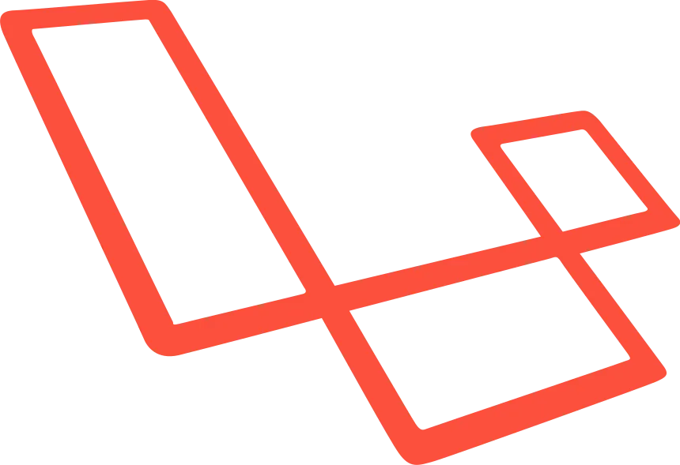
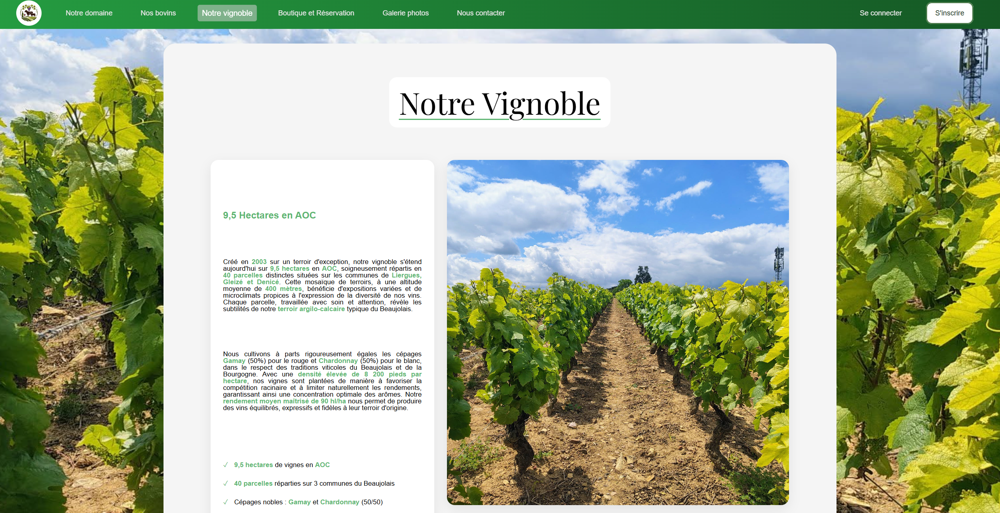
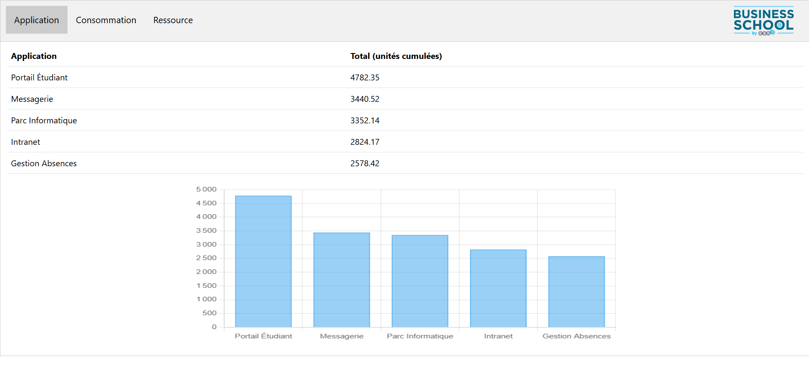

« La beauté des choses existe parce qu’elles disparaissent. »
« La beauté des choses existe parce qu’elles disparaissent. »
Étudiant en BTS SIO option SLAM, je suis passionné par le développement logiciel et la création d'applications web. Mon objectif est de devenir un développeur polyvalent capable de transformer des idées en solutions techniques concrètes et élégantes.
Curieux et autodidacte, j'aime apprendre de nouvelles technologies et relever des défis techniques. Ce portfolio rassemble mes projets réalisés durant ma formation et mes expériences personnelles.
Le BTS Services Informatiques aux Organisations est une formation de deux ans qui prépare aux métiers de l'informatique en entreprise.

Laravel26/05/25 au 27/06/25
05/02/26 au 13/03/26

Réalisation d’un site web vitrine pour le Domaine des Bruyères, avec une approche minimaliste et moderne. Ce projet m’a permis de travailler une interface claire et intuitive, tout en améliorant mes compétences en HTML, CSS et JavaScript. J’ai également porté une attention particulière au responsive et à l’expérience utilisateur.
HTML • CSS • JS
Participation au concours DCS Games, réunissant plusieurs écoles de la région lyonnaise. J’y ai représenté la Business School de Villefranche-sur-Saône à travers la réalisation d’un site web respectant un cahier des charges précis. Ce projet, développé en PHP avec une base de données, a été présenté devant un jury, ce qui m’a permis de travailler à la fois la technique et la présentation d’un projet.
php • sqlite • JS • CSSSuivre l’évolution technologique pour rester compétent
La veille informatique consiste à surveiller, collecter et analyser les évolutions technologiques, les nouvelles versions de frameworks, les bonnes pratiques de sécurité, ou encore les tendances du développement web et applicatif.
Elle peut porter sur : les langages, les frameworks, les vulnérabilités, les outils, les méthodes (DevOps, Agile, etc.), ou les normes.
Cette pratique m’a permis de découvrir Laravel 11 avant sa sortie officielle, d’intégrer des bonnes pratiques récentes dans mes projets (Domaine des Bruyères, DCS Games), et de développer une vraie curiosité technique valorisée en entreprise.